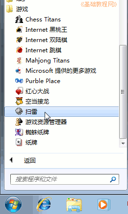
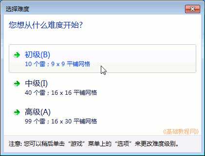
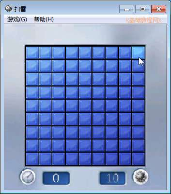
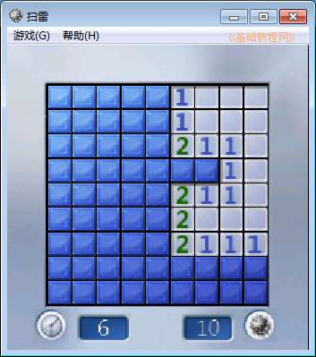
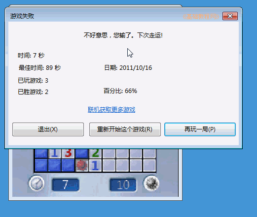
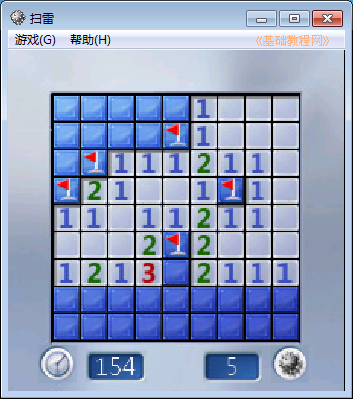
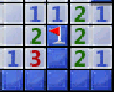

Windows7 基础入门教程
作者：TeliuTe 来源：基础教程网
六、扫雷游戏 返回目录 下一课扫雷是系统自带的一个小智力游戏，学习它可以让我们练习鼠标操作，同时也可以培养推理判断能力；
1、启动扫雷程序
1）点“开始－所有程序”菜单，选择“游戏－扫雷”，出来一个小窗口，选择“初级”进入游戏；
 
2）窗口中间有许许多多小方块，里面藏了10个地雷，下边的数字是时间，和剩余的地雷数；

2、扫雷方法
1）左键单击蓝色小砖块，把路面清理出来，还会出现一些数字，拿不准可以先点四个角上的砖块；

2）如果蓝色小砖块下边有地雷，翻开就会爆炸，只有选择重新开始了；

3）数字表示路面上藏有几个雷，比如 1 就表示这儿藏有1个地雷，一般尖角的 1 肯定是地雷，
就像下面插红旗的砖块，它是单独突出来的一块；

确定是地雷以后，点一下鼠标右键，就可以插上一个红旗，表示找到了一个地雷；
4）从这个尖角找出一个雷，那么凡是挨着它的其他砖块都不是地雷了，可以放心翻开它；
把上面那个尖角跟前的砖块都可以翻开，但下边那个尖角旁边写着2，说明这里有两个地雷，所以还需要判断；

5）数字一方面表示地雷的数目，另一方面也告诉我们这里最多有几个地雷，
如果已经翻出一个，那么其他的就都不是了；
6）当全部翻开，插好10面小红旗后，会提示你羸了，如果成绩优秀还会上扫雷排行榜；
3、练习
1）成功地翻出一盘扫雷；
本节学习了扫雷游戏的基础知识，如果你成功地完成了练习，请继续学习下一课内容；
本教程由86团学校TeliuTe制作|著作权所有
基础教程网：>http://teliute.org/
美丽的校园……
转载和引用本站内容，请保留作者和本站链接。